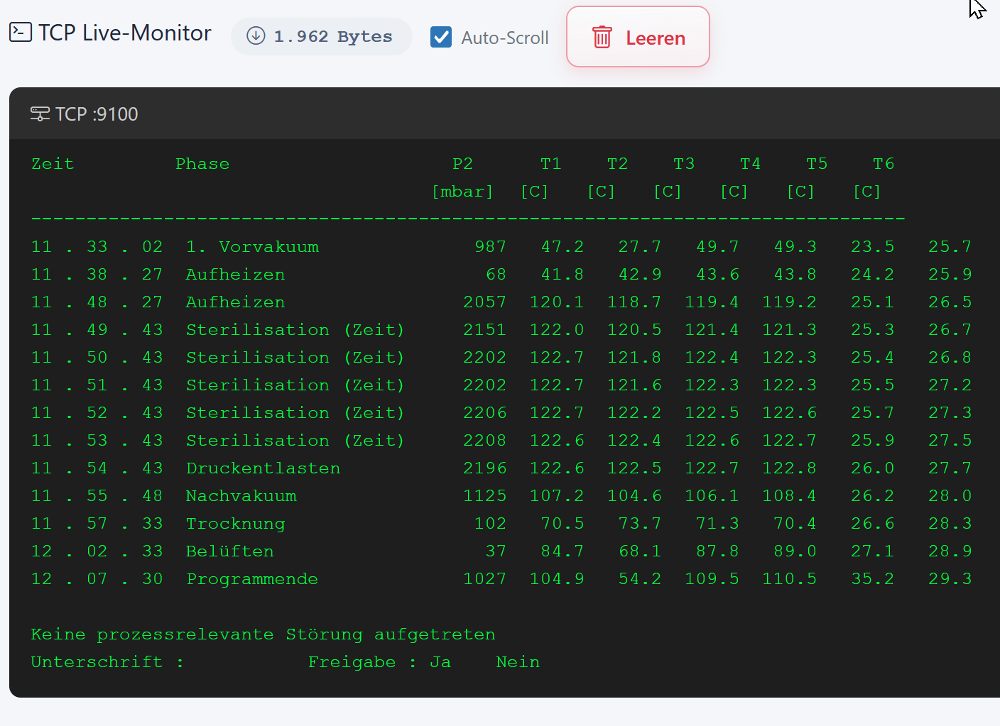
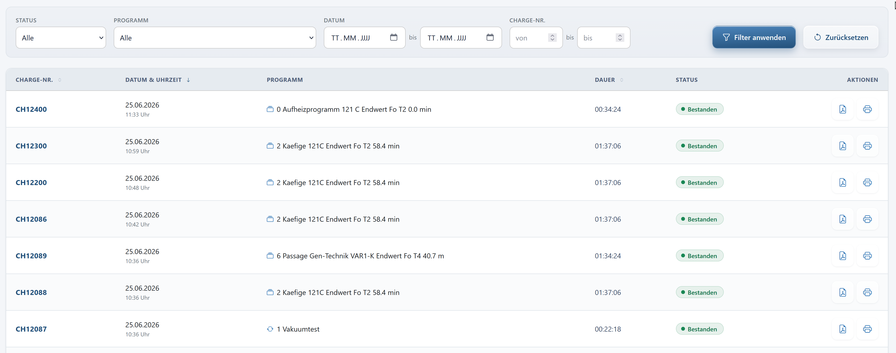
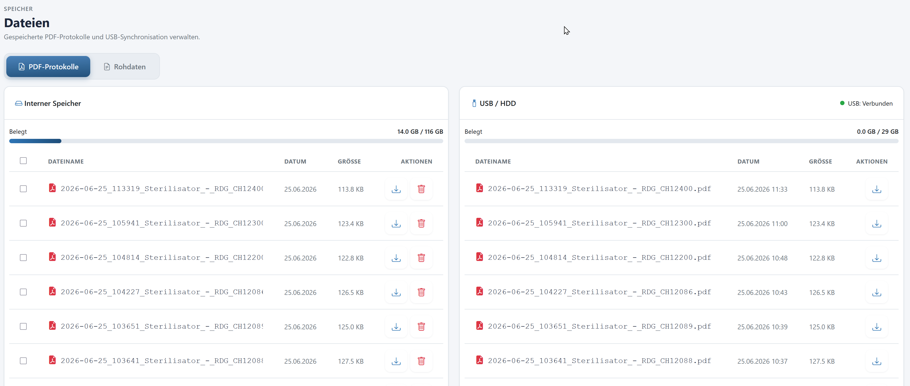

DocuControl
DocuControl zeichnet Sterilisationsprozesse vollautomatisch auf und dokumentiert sie normkonform nach EN ISO 17665 — als durchsuchbare PDF-Chargendokumentation mit Druck- und Temperaturkurven sowie als Web-Dashboard. Der entscheidende Vorteil: DocuControl benötigt dafür weder einen Eingriff in die Maschine noch in Ihr Netzwerk.
Kein Eingriff in die Maschine
DocuControl wird passiv zwischen HMI-Panel und Drucker geschaltet und liest die Chargenprotokolle direkt aus dem Druckdatenstrom. Die validierte Maschinensteuerung selbst wird nicht verändert und nicht einmal berührt.
Kein Eingriff ins Kundennetzwerk
Maschinen-Seite und Kunden-Netzwerk sind über zwei physisch getrennte Schnittstellen angebunden, ohne IP-Routing dazwischen. DocuControl ist ein Endgerät, kein Router — die zentrale Voraussetzung für jede IT-Freigabe.
Drei Betriebsmodi
Integriert im Kunden-LAN, als eigener WLAN-Hotspot oder per USB-Stick-Export — je nach IT-Politik vor Ort wählbar, alle drei Modi sind im Gerät bereits enthalten.
Vollständig autark
Keine ausgehenden Internetverbindungen im Standardbetrieb, keine personenbezogenen Daten — nur Maschinendaten. DSGVO-konform durch lokale Datenverarbeitung.
Funktionsumfang
Alle Chargenprotokolle werden in Echtzeit automatisch erfasst und strukturiert gespeichert — inklusive robuster Behandlung unvollständiger Protokolle, etwa bei Stromausfall oder Prozessabbruch. Die Auswertung erfolgt als hochwertige PDF-Dokumentation mit grafischer Kurvendarstellung von Druck- und Temperaturverlauf sowie als Web-Dashboard mit Live-Übersicht aller laufenden und vergangenen Chargen.
Die Datenspeicherung erfolgt autark auf dem Gerät selbst und auf USB-Stick, optional zusätzlich per Netzwerk auf einem Server. Die Installation ist denkbar einfach: Der vorhandene LAN-Printserver wird abgeklemmt, DocuControl an gleicher Stelle angeschlossen — in der Regel in unter 30 Minuten betriebsbereit.
DocuControl in der Praxis

Live-Monitor
Der Druckdatenstrom des Sterilisators wird live mitgelesen und Zeile für Zeile angezeigt — Phase, Druck und alle Temperaturfühler in Echtzeit, inklusive Freigabestatus am Ende der Charge.

Chargenübersicht
Alle Chargen auf einen Blick — mit Chargen-Nr., Programm, Dauer und Status. Filterbar nach Status, Programm und Zeitraum, jede Charge direkt als PDF abrufbar.

Dateiverwaltung
PDF-Protokolle werden parallel auf internem Speicher und USB-Stick abgelegt — jederzeit einsehbar, herunterladbar und für die GMP-Archivierung exportierbar.